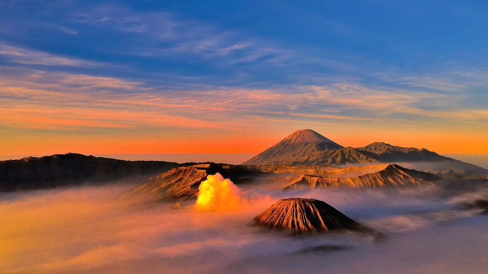
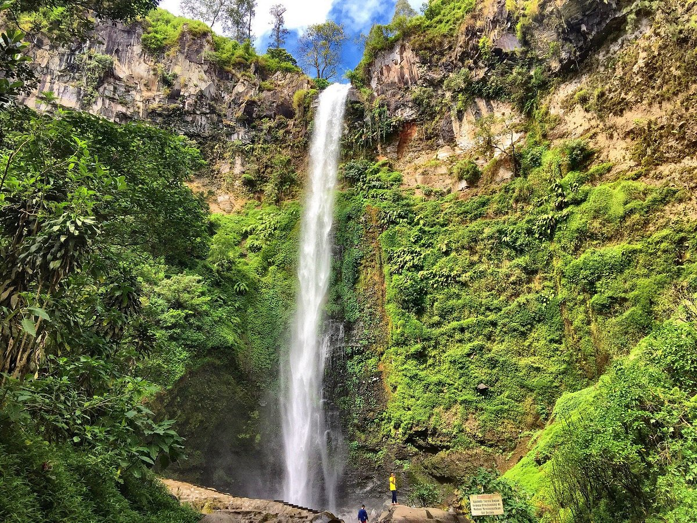

| Beranda | Menu Wisata | Website Pariwisata |
|
 |
|
 |
Gunung Bromo |
Kawah Ijen |
Air Terjun Coban Rondo |
|
Gunung Bromo merupakan salah satu tempat wisata |
Kawah Ijen merupakan salah satu tempat wisata terkenal yang |
Air Terjun Coban Rondo Merupakan salah satu tempat wisata |
Contact Person: Jelajah Wisata 085731215572
Bisa Juga Hubungi Melalui: r4h1774@gmail.com